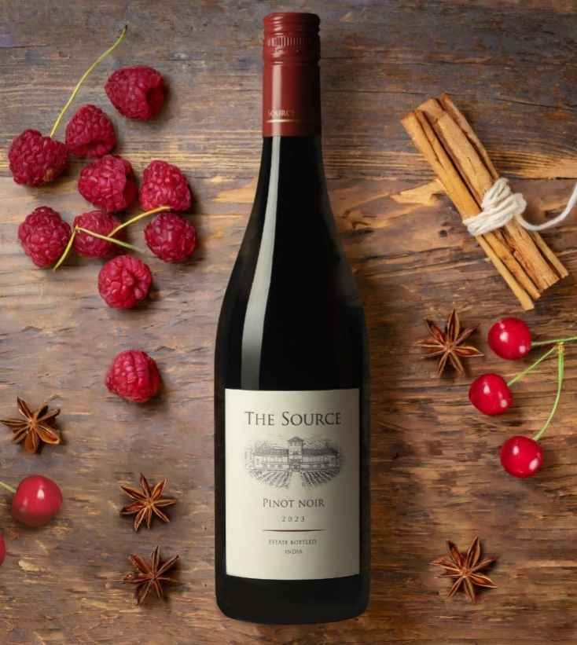

<body>
<div id="about">
    <div class="container">
       <div class="row">
           <div class="about-col-1">
               
           </div>
           <div class="about-col-2">
               <h1 class="sub-title">About Us</h1>
               <br>
               <p class="about-text">In 1996, Rajeev Samant, the CEO and Founder, recognized the immense potential the region of Nashik in India holds for cultivating grapes. He then decided to start Sula Vineyards with the goal of making quality wine in India, with the help of an eminent California winemaker, Kerry Damskey. 
                   <br><br>
                   The unique climate of Nashik helps in growing different grape varietals, each with its distinct personality.Our product selection strives to offer something foreveryone, and every celebration. Sula is proud to have built a culture of wine drinking in India and has been the #1 international trailblazer in Indian wines. Everything we do at Sula is guided by core values that aim at preserving and enhancing the art of winemaking. Rajeev Samant laid a strong foundation an equitable organization, and we strive to carry on the legacy and philosophy.
                   <br><br>
                   <b>Our wines have a clear conscience!!</b> At Sula, we make sure that everything we make respects our values, alongside our objectives. Making great wine is our passion and our goal, but we make sure to put the anything else. Each extra step taken towards creating a sustainable final product is worth it.
                   <br><br>
                   The region of Nashik experiences an extremely dry period,and a critical monsoon season each year. During the critical monsoon period, we harvest up to 90% of the water we use in the year. We reuse treated water to cut down on our carbon footprint and have installed drip irrigation, which helps us reduce water consumption by approx. 40%. Apart from this,we also use solar energy immensely. As a socially equitable company, we respect human right and dont employ any form of child labour in our operations.
                   <br><br>
                   
               </p>
           </div>
       </div>
    </div>
</div>
</body>
